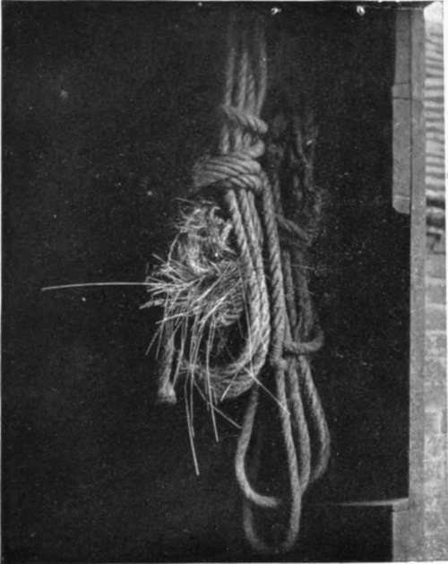
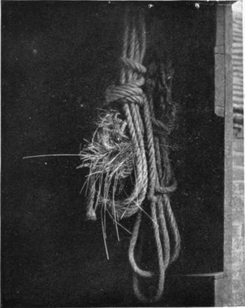

Some Curious Nesting Places. Continued
Description
This section is from the book "Nature Photography For Beginners", by E. J. Bedford. Also available from Amazon: Nature Photography for Beginners.
Some Curious Nesting Places. Continued
The following story was related to me by an old friend. Near his house in the country was a cottage called " The Box," which had been untenanted for some time. One day he told the members of his family that " The Box " had been taken. They were very curious, especially the lady members, to know who had taken it, and he was able to inform them it was a young married couple. This only increased their curiosity. At last he had to explain to them that he meant the " box " on the garden gate, which was tenanted by a pair of Tits, which had built their nest in it. On another occasion a nest belonging to a pair of these birds was built in a letterbox at the gate of a farmhouse. The farmer told me that two broods of young birds had been reared annually in the box, with few exceptions, for thirty years! For the bird's convenience another box—it was a Cadbury's cocoa boa was nailed to the fence to receive the letters so that the bii should not be disturbed, and the box containing the nest was fastened by a chain and padlock so that no one could interfere with it.
The Blue Tit will also make use of a letter-box for its nest, but often chooses a site where the entrance hole is exceedingly small, and one wonders how the birds manage to get in and out. I once watched a pair of these birds feeding their young in a nest built in a hollow ball at the top of a railway signal post. The ball had become fractured and a small hole in it gave access to the interior. During the time I stood watching the birds I timed their visits, and found that one bird fed the young eight times in six minutes, which means that the two adult birds would pay one hundred and sixty visits to their young in one hour, and supposing they brought two grubs each time (which is a low estimate) it would mean the destruction of three hundred and twenty grubs in one hour. I had watched the birds during the morning, and on returning to the station later in the day was distressed to find that during my absence one of the porters employed at the station had climbed the ladder of the signal post and had taken out and killed seven of the young birds, " because they should not get at his fruit buds." He left in two others which he could not reach, and the old birds were still busy feeding these when I returned. I could not help expressing the hope that the grubs which the young birds he had killed would be unable to destroy might eat up all his buds and thus pay him out for his cruelty and mistaken zeal.
Another nest of this species was built in a lamp-post in the street of a County town. It had been built there for several years, and on account of the nuisance caused by boys throwing stones at the birds, the aperture at the top of the post was stopped up by a block of wood. During the following season the birds could not get in, but the block shrunk during the year, and the next spring the nest was again built in the post.
Fig. 78. Site of Nightingale's Nest.
In the same garden which contained the Great Tit's nest in the rhubarb-pot, I also found a Blackbird's nest containing the very unusual number of eight eggs. The nest was near the centre of a large bush growing over a pond, and I feel certain had not been tampered with in any way. (Fig. 61.) Seven young birds were successfully hatched from the nest.
The Swallow often builds its nest in very odd places. One of the most curious which has come under my own notice is the example shown in Fig. 67. This was built on a tendril of ivy growing through the roof of a coach-house belonging to a large school in Eastbourne, and as may be seen by the illustration was attached in a remarkable way to the stem of the plant.
Fig. 67. Swallow's Nest built on Tendril of Ivy.
The nest of the Common Wren shown in Fig. 68 was built in a waggon rope hanging in a stable and looked exactly like a little wisp of hay. Notice how the peculiar way in which the ends of the hay project from the nest adds to this similarity.
 
Fig. 68. Wren's Nest in Wagon Rope.
A farm labourer who allowed me to roam about his large garden told me that one day he went into it and, while standing under a tree containing an old coat, which he had placed up as a scarecrow, he thought he heard the notes of young birds. He examined the tree but could not find any nest, and after a while traced the sounds he heard to the coat. On making an examination of the latter, he found a nest of young Sparrows in the top of the coat just inside the sleeve, and a Blue Tit's nest at the lower end of the same sleeve. Both birds had lined their nests with the stuffing of the coat picked out from the seam at the shoulder.
The House Sparrow inhabiting towns will often select a curious place to build its nest in. Some time ago I obtained a photograph of a nest belonging to this bird which was built under the plumes of the hat of the equestrian statue of Lord Strathnairn at Knightsbridge, London. There was also at the time another nest built under the horse's tail. I have observed a nest under the plumes every season for some years past.
A Starling used to build its nest in the mouth of a cannon at Windsor Castle, and another remarkable instance of a choice of a nesting site by this bird was related to me by a friend. In his brother's garden a pair of Starlings tried to build their nest upon the inclined top of a wall. The materials placed there would not remain, however, owing to the slanting surface. The birds repeatedly tried, without effect, to obtain a lodgment for the foundation of the nest, and eventually solved the difficulty by building a buttress against the wall, commencing on the ground and carrying it up to the top level with the place they had been trying to make use of previously; and on the top of this buttress the nest was constructed.
The nest of the Hedge Sparrow shown in Fig. 77 was built behind some wire netting. As there was a cat on the premises no doubt the bird had selected this position for greater safety from pussy.
Fig. 77. Hedge Sparrow's Nest built behind Wire-Netting.
Examples of the selection of curious sites similar to those mentioned are continually occurring, and the Nature Photographer who is on the look-out for such will be able to make an interesting collection of photographs in the course of a few seasons.
Fig. 79. Nightingale on Nest.
Fig. 80. Nightingale's Nest.
Continue to:
- prev: Chapter XII. Some Curious Nesting Places
- Table of Contents
- next: Chapter XIII. The First Three Weeks In The Life Of A Cuckoo
Tags
nature, photography, art, birds, camera